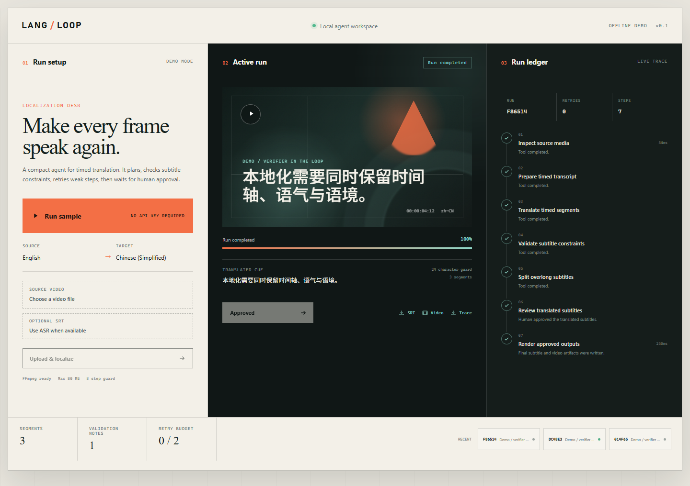

Agent / Video localization
VideoLocalize Agent
字幕本地化智能体。串联媒体检查、字幕准备、分段翻译、约束校验与人工确认，并把每一步执行证据保存在任务 Trace 中。
- 有界 Agent 工作流，支持工具重试、停止条件与 Human-in-the-loop。
- FastAPI + SQLite + FFmpeg，支持 SRT / MP4 / Trace 产物下载。
- 离线确定性演示与可配置模型模式，10 项测试覆盖关键流程。

Offline demo
任务执行账本与人工审核